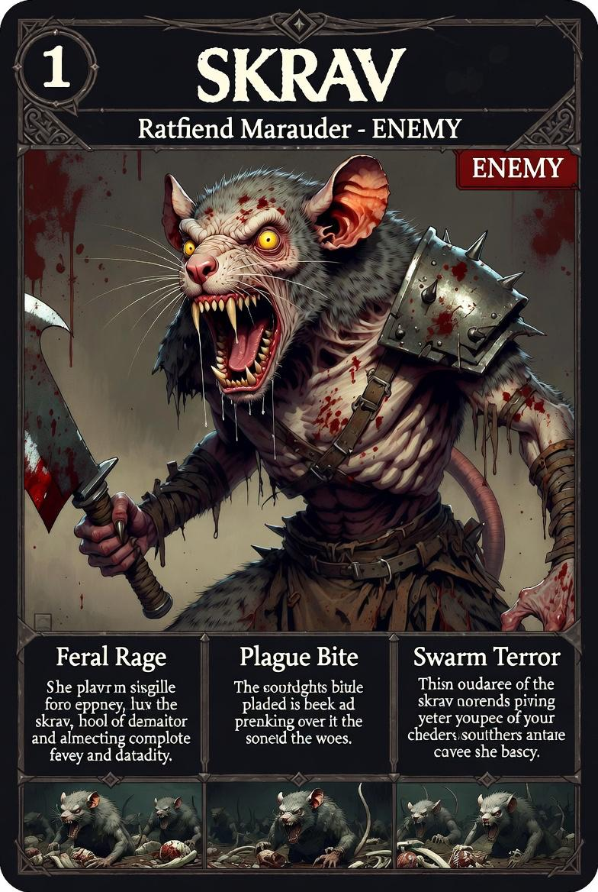

Ratfiend Marauder — Mutanti delle Terre di Nessuno
Non attaccano mai da soli. Zero magia. Pura violenza fisica.
ENEMY✓ IMPLEMENTATO#8A7870#E8A820#CC1111| Zona | Hex | |
|---|---|---|
| Pelo base | #8A7870 | |
| Pelo highlight | #B0A898 | |
| Pelo ombre | #3A3028 | |
| Orecchie / naso | #C06060 | |
| Denti / artigli | #E0D8A0 | |
| Occhi (giallo ambra) | #E8A820 | |
| Spallaccio metallo | #909080 | |
| Cintura / tessuto | #8B6040 | |
| Lama cleaver | #C0C0B0 | |
| Sangue | #CC1111 |
#858080 (grigio freddo), occhi #CC2222 (rosso sangue), labbra #0A0808 (nere).| Meccanica | Dettaglio |
|---|---|
| Alpha meccanica | Uccidere il capobranco → flee e disorganizzazione del branco |
| Attacco coda | Proiettile fisico telegrafato, traiettoria a parabola |
| Squittio | Audio cue che annuncia spawn imminente |
| Scaling dimensionale | Piccoli: veloci. Grandi: lenti ma resistenti |
| Armi | Mischia: mazze chiodate, lance spezzate, lame seghettate |
| Comportamento | Branco — nessuno avanza senza segnale del capobranco |